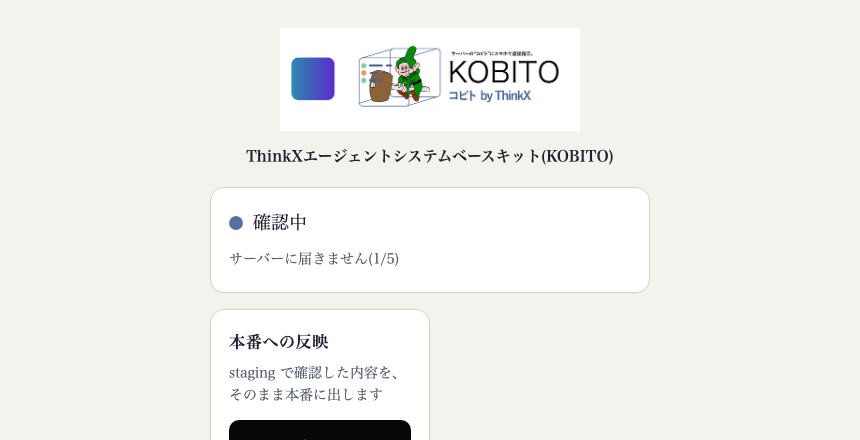
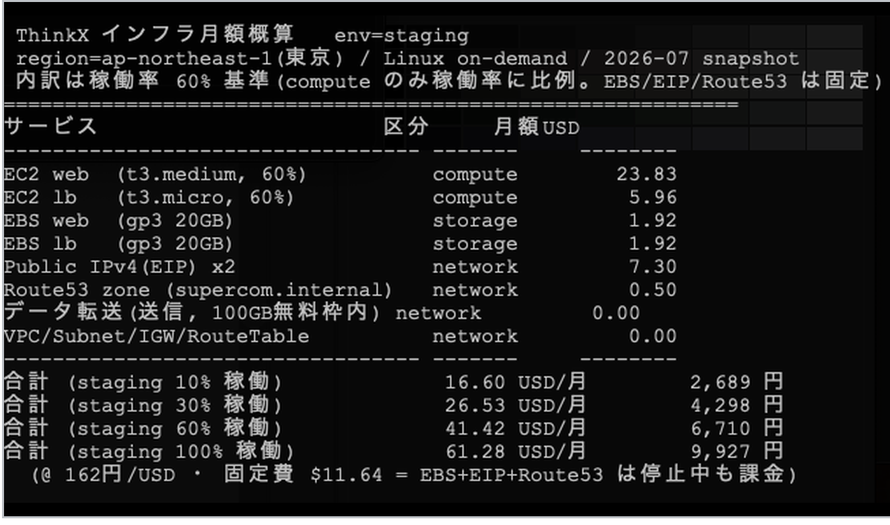

ThinkXエージェントシステムベースキット(KOBITO)
ITツール名は本製品名にプラン名を付したもの(「ThinkXエージェントシステムベースキット(KOBITO) Lite／Standard／Pro」。各プランを別ITツールとして登録)
ThinkX株式会社(自社開発・法人番号 6010401116248)
AI開発10年。自社コードベース約67万行、特許4件(うち2件出願中)。音声・自然言語処理分野のアルゴリズム研究開発。
エンジニアでなくても「こんなシステムにしたい」と日本語で頼むだけでシステムが作れる時代になったが、AIに任せきりで作ると設計の品質が低く、長期的に不安定で安全性の低いシステムになることが多く、運用効率の高いシステムとなるまで長い改善を必要とする。
本ソフトウェアは、Anthropic社 Claude Codeをベースとしながら、AI開発10年の実績をもつThinkXが自ら用いている、エージェント駆動開発システム基盤の完成されたセットアップである。当社がエンジニアに指示するレベルの開発指示書・コード規約・サンプルコードが基盤に組み込み済みで、エージェント“コビト”はその延長でしか書かない。お客様専用AWSサーバーの中に“コビト”が常駐し、非エンジニアでも手元のスマートフォンやPCから日本語で指示するだけで、コーポレートサイトの運用(ページ追加・更新・公開)も、管理表・台帳などの社内システムも、この基盤の上に積み上げていくことができる。本番反映はテスト環境(ステージング)での確認と利用者の承認を必ず経る。
問い合わせ、チャット(Discord)への通知、SEOなどの機能はデフォルトで付属する。ソースコードはアトミックな技術スタックと設計が保たれ、エージェント用の基本マナーによって、長期的にAIが設計の失敗・複雑化に陥らずシンプルさを維持するための長いノウハウの蓄積が実現されている。
AWS・GitHub・Claudeの各アカウントとドメインはお客様が所有する。当社がお客様のメールアドレスで作成し、完了後にログイン情報一式を引き渡す。契約が終わってもサイトはそのまま動き続け、記事などのデータはGitで管理されているのでいつでも他のシステムへ移せる。
製品ページ：https://thinkxinc.com/products/KOBITO(機能・料金・導入の流れ・FAQを公開)
本番への反映は必ず「利用者の承認」と「ステージングでの確認」を経る。公開後の再起動・ログ確認・TLS更新・ロールバック・日次バックアップも同じチャットで指示する。

図Aの画面上部の拡大：ITツール名の表示部

申請プロセス：主 共P-05 情シス・統合業務／副 共P-01 顧客対応・販売支援 黄色＝該当箇所(別紙2「該当する機能例」の語で対応を示す)
| 機能 | 内容 | プロセス／別紙2の機能例 |
|---|---|---|
| AWSクラウドの自動構築と費用の見える化 | Terraformでお客様のAWSにサーバー一式(本番・ステージング)を自動で立ち上げる。かかる費用は事前に簡単に分かる | P-05 社内資産管理(IT資産の構築・費用管理) |
| スマホでページ追加・更新 | スマホで指示すれば手のひらで運用できる。ページ更新・LP追加・告知・FAQ・問い合わせ導線修正 | P-05 ビジネスアプリ作成ツール／P-01 販促 |
| ステージングでのテスト・クローズド公開 | ステージングサーバーで確認してから本番へ。IDとパスワードでログインして閲覧できるクローズド公開。使わないときは「停止して」で止まる | P-05 ワークフロー／社内資産管理(IT資産の稼働管理) |
| 本番へのデプロイ | 確認・承認のうえ本番に反映 | P-05 ワークフローシステム(承認後の実行) |
| サーバー再起動 | サーバー・プロセスの再起動 | P-05 社内資産管理(IT資産・機器管理) |
| ログ確認 | アクセスログ・エラーログの確認 | P-05 社内資産管理／分析・解析ツール |
| TLS更新 | certbot によるTLS証明書の更新 | P-05 社内資産管理(証明書の期限管理) |
| 変更履歴とロールバック | 変更はすべてGitに記録され、「戻して」で元に戻せる | P-05 ワークフローシステム(差し戻し) |
| 日次バックアップ | GitHubにプッシュされた時点でバックアップ。お客様のGitHub内のバックアップ用リポジトリへ日次で保存 | P-05 社内資産管理(IT資産の保全) |
| 問い合わせ | 問い合わせフォーム。受信をDiscordに通知 | P-01 CRM(対応履歴の受付・共有)、無人受付 |
| SEO | 検索エンジン最適化に配慮したページ構成・メタ情報 | P-01 販促(検索経由の集客) |
共P-05：サイトを構成するIT資産(サーバー・証明書・ログ・リポジトリ)の構築・管理と、変更→承認→公開の承認ワークフローを一連で担う(単一処理ではない)。共P-01：問い合わせ受付と告知・LP・FAQによる販促コンテンツの運用。
導入手順(当社が実施。お客様の端末操作なし・訪問なし・2〜3週間)
問い合わせ窓口
メールおよび電話(受付時間内)で問い合わせに対応。動作環境：Python／Flask、nginx、uWSGI・systemd、Git、Linux。AWS EC2上に本番とステージングを分離して構築(1社1環境)。
利用方法
Lite
780,000円(税抜)
Standard
1,560,000円(税抜)
Pro
6,240,000円(税抜)
価格はソフトウェア本体(利用権)の価格。各プランを別ITツールとして登録する。お客様所有のクラウド・AI利用料は別途：AWS 月6,000〜9,000円程度(ステージングの稼働量による)＋Claude有料プラン(月$20〜)＋ドメイン 年1,500円程度。